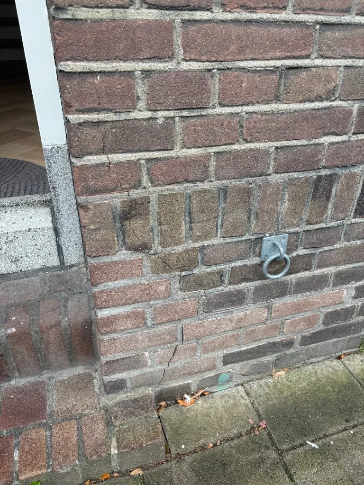
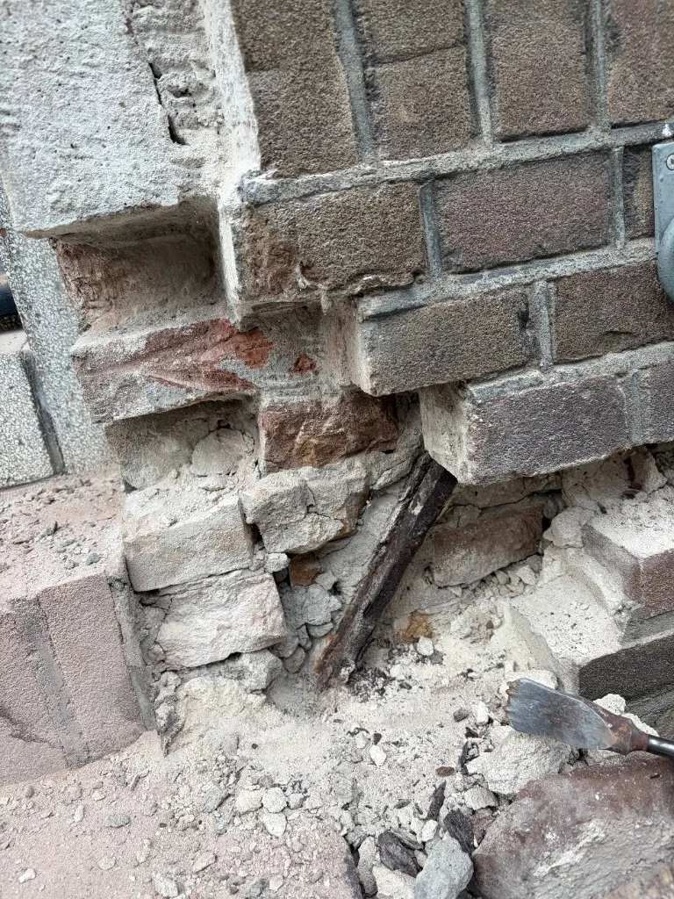
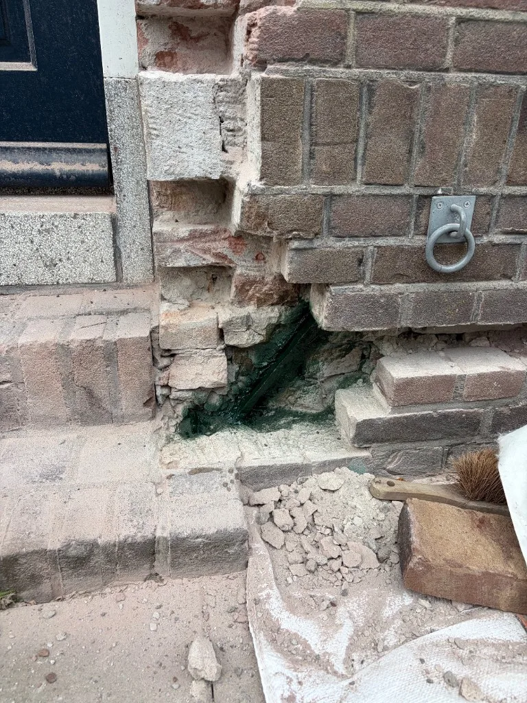
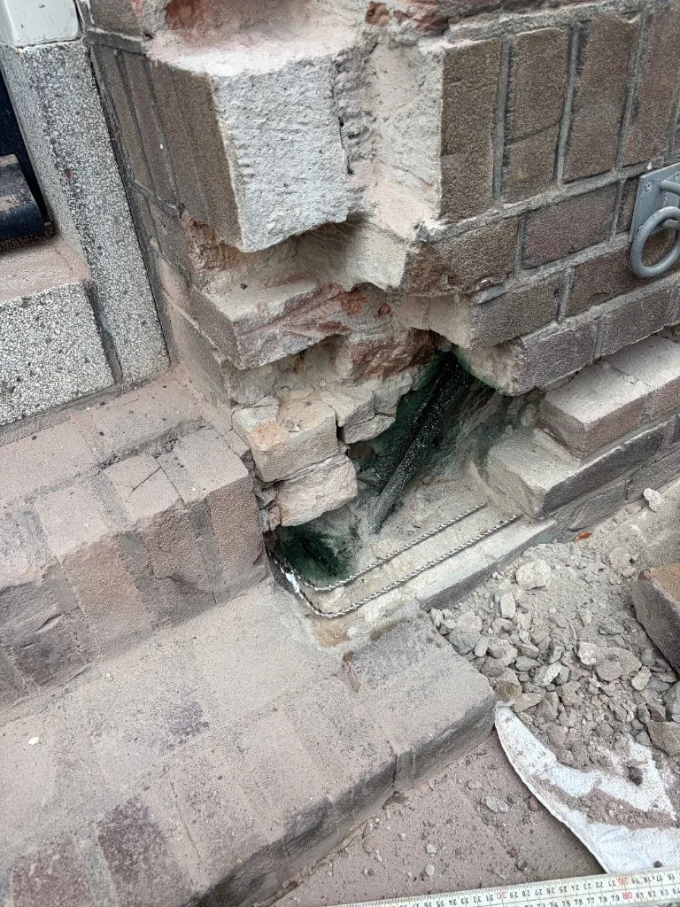
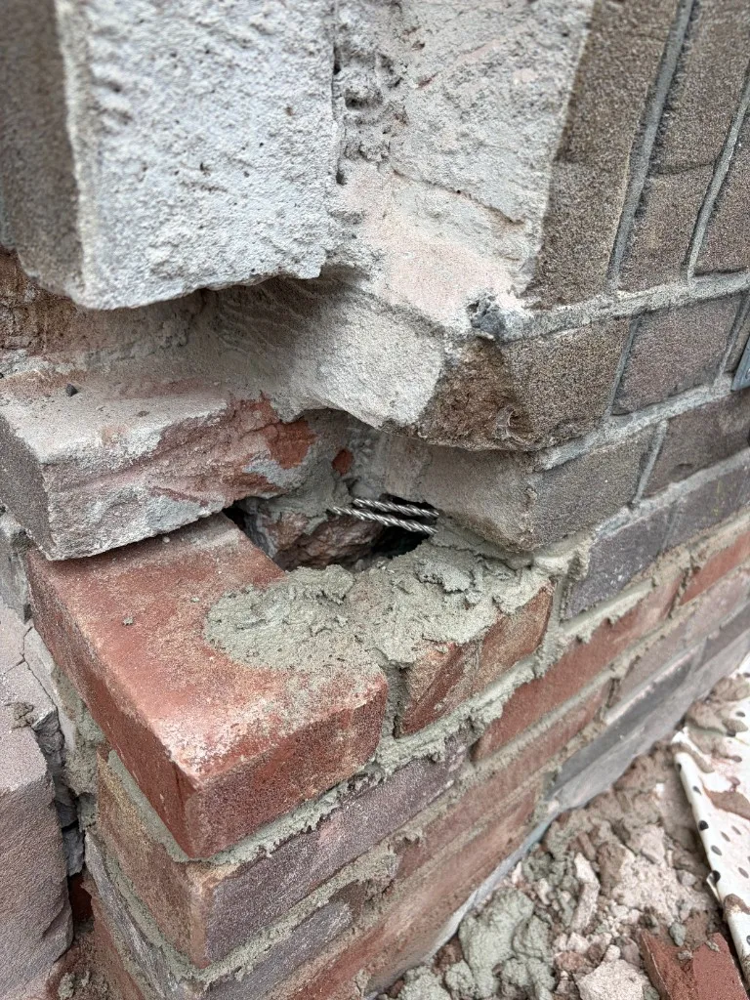
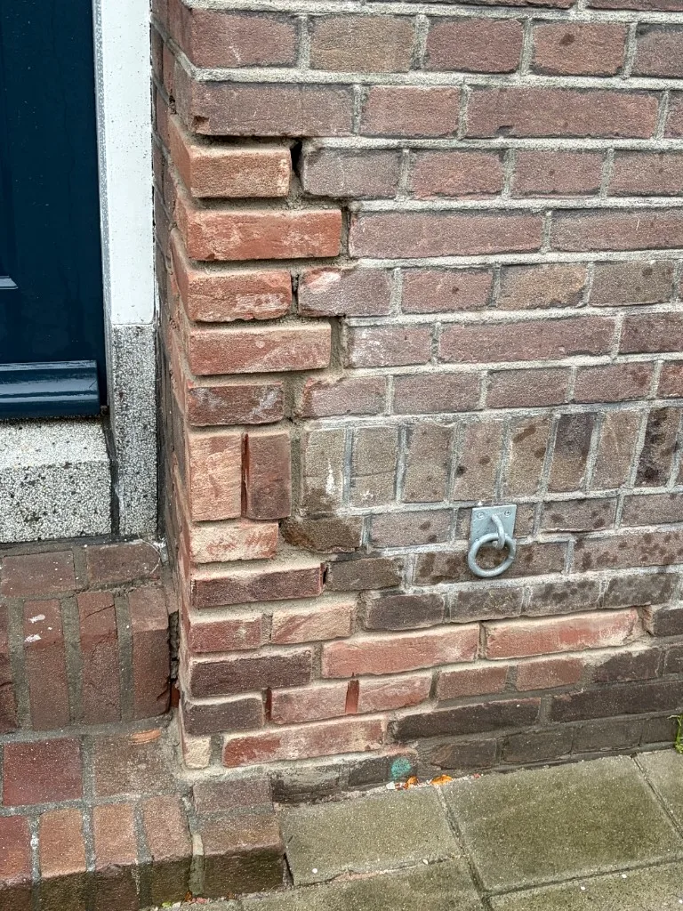

“Onze scheur in de gevel is netjes hersteld en de oorzaak aangepakt. Goede communicatie en komt zijn afspraken na!”
Scheurherstel in Dordrecht
Spiraalankerplaatsing in Dordrecht: de staalconstructie ontroest, in de antiroestverf gezet en de hoek terug gemetseld.
Dordrecht · scheur en spiraalanker
Eerst de staalconstructie, daarna de spiraalankerplaatsing.
In Dordrecht, naast de voordeur, was de hoek opengescheurd. In het metselwerk zat een staalconstructie die roestte. Roest zet uit. Daardoor duwt het staal de voeg en de stenen uit elkaar, en wordt de scheur vanzelf wijder. Nieuwe stenen ervoor metselen helpt dan niet: de roest blijft onder het werk doorzetten.
Daarom is de hoek opengehakt tot het staal vrij lag. De staalconstructie is ontroest en in de antiroestverf gezet. Over de scheur is daarna de spiraalankerplaatsing gedaan: de ankers liggen in de lintvoeg en houden beide kanten van de hoek bij elkaar. Dat is scheurherstel door spiraalankerplaatsing. Pas daarna is de hoek terug gemetseld, in het verband van de bestaande gevel.
- Scheur opengehakt tot op de staalconstructie
- Staalconstructie ontroest en in de antiroestverf gezet
- Spiraalankerplaatsing in de lintvoeg
- Hoek in Dordrecht terug gemetseld
De volgorde van het scheurherstel
Eerst het staal, dan de spiraalankers, en als laatste de stenen.
1 · Voor · de scheur

2 · Scheur open, staal bloot

3 · In de antiroestverf

4 · Spiraalankerplaatsing

5 · Detail van de wapening

6 · Hoek terug gemetseld

Wat is scheurherstel door spiraalankerplaatsing?
De scheur wordt opengelegd en met spiraalankers in de lintvoeg overbrugd. Zo blijven beide kanten van het metselwerk aan elkaar vastzitten.
Waarom de staalconstructie ontroesten en in de antiroestverf zetten?
Roestend staal zet uit en duwt de stenen uit elkaar. Eerst ontroesten en dan in de antiroestverf zetten, anders komt de scheur terug achter het nieuwe metselwerk.
Wordt de hoek daarna weer dicht gemetseld?
Ja. Na de antiroestverf en de spiraalankerplaatsing wordt de hoek terug gemetseld in het bestaande verband.
Doen jullie dit in Dordrecht?
Ja. Deze hoek is in Dordrecht hersteld. Vanuit Dordrecht werken we ook in de rest van de Drechtsteden.
Scheur in Dordrecht?
Stuur een foto. Meestal reactie binnen 24 uur.